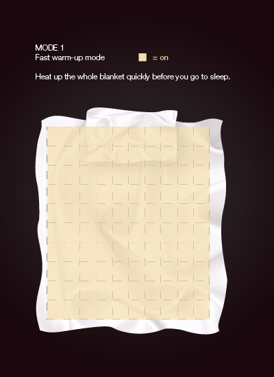

Smart Sleep 慧眠
Basic Info
Type: Interactive Concept and Algorithm
Tool: Processing
Team member: 4
Work in charge: Software Programming / Visual Identity
Requirement & Purpose
Smart SLEEP was developed from a research about the heating blanket on the market and the sleeping habit of the people of their 40s and 50s.
The problems of the product on the current market were analysed and the concerns of the users when choosing and using haet blanket were clarified for the peoject.
The basic concept of SMART SLEEP is modulization of single block to turn the heat on and off according to the waeight pressure on the block and the algotithm. And the blanket can be made up of multi blocks as the users needs.
The idea of interactive heating blanket

Mode 1: Fast warm-up mode
Mode 2: Energy saving mode
Mode 3: Smart body mode
Mode 4: Guesture guiding mode